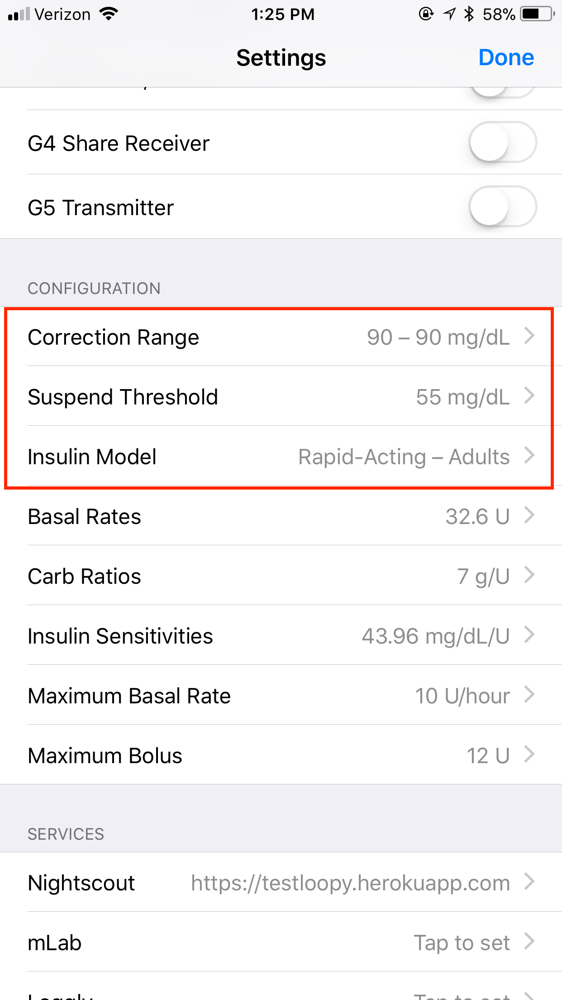

Loop v1.5 Features⌁
This is an experimental new page in the docs. Many people updating are not reading through the docs when they update their Loops, and therefore missing many of the new features (and requirements)...so we are adding a page to try to encourage docs use when updating.
As always though, the GitHub page still has great release notes about the features and changes since the previous Loop v1.4 (Note: the first notes about watchOS 4 update appears to be incorrect. And carthage does need some attention as outlined below)
Building and OS updates⌁
If you are using iOS 11, you will need to update your Apple watch to watchOS 4 for Loop v15. If you don't do that ahead of building Loop v1.5, your Apple watch will not have Loop available.
Loop v1.5 will also required an update to macOS 10.12.6 and Xcode 9. Because of those updates, some of the old methods of installation (specifically carthage) have caused some build issues in Xcode. If you originally installed carthage the old way (through carthage.pkg download..like 99% of the people have), you will need to install homebrew now and use two commands in Terminal app prior to building your Loop v1.5. If you aren't sure how you installed carthage originally...don't fret...it won't hurt anything to run these commands regardless.
Open your Terminal app found in the Applications>>Utilities folder and then enter /usr/bin/ruby -e "$(curl -fsSL https://raw.githubusercontent.com/Homebrew/install/master/install)" Confirm the homebrew installation by pressing enter, and then typing in your computer password. When the installation finishes, use the command brew link --overwrite carthage. After those two steps, you can close out Terminal app, return to Xcode and finish the rest of your installation just as always. If you fail to do these steps, you will likely see this error message when you build.

Once you update to Xcode 9, be aware that old versions of Loop will no longer build successfully.
Loop Settings⌁
There are name changes to a couple old settings, and a new setting has been added.

Correction Range
⌁Correction Range is the new name for what used to be called BG target range. Reason being...correction range is a little more correct as the phrase represents the targets Loop is trying to correct you too...not necessarily what your ideal BG target range may be. For example, you may keep a correction target of 100-100 for Loop to aim to, but use a desired BG target range of 90-150 when discussing things with your endo about "time in range". Correction range is just a little more accurate about how the values are used.
Suspend Threshold
⌁Suspend Threshold is the new term for the old Minimum BG Guard. The name was changed to help people realize that this value is also used in determining when Loop will set zero temp basals (aka suspend basals) as well as its function in bolusing recommendations. The description below the setting has been updated to help with that understanding.
Insulin Model
⌁This section is brand new to Loop v1.5. Loop still has the option for the old model (Walsh curve), as well as three new models.
You can read up on the new curves here. There is also a new customization section for the curves here.
These new models are quite a bit different than the Walsh model. I recommend watching the bolusing recommendations and how meals are behaving with your curve selection. Because the timing of the peak activity has changed, this will impact how the Loop recommends boluses in some instances. Overall, most users are finding that the changes have resulted in a bit more conservative bolusing recommendations (less insulin), especially for long slow carb meals. Developers are looking at options to assess and address that.
If you fail to select an insulin model you will see this error "Missing data: Glucose effects"

Pre-Meal Override Target
⌁

You will notice a new logo of a plate with utensils next to the carb entry tool, at the bottom of the Loop main screen. This icon will remain grey until you go into the Correction Targets area and set the "pre-meal" target range. The pre-meal target is designed to be used to as an easy pre-bolus before a meal (similar to the "eating-soon" mode discussed in OpenAPS).

If you set your pre-meal target to 80-80 mg/dl for example, Loop will give you an extra push to get you to the lower target number before the meal. The pre-meal target, when activated by pressing on the icon, will stay active for one hour, until carbs are entered, or until it is manually cancelled...whichever comes first.
Loop will adjust any insulin bolus as needed based on the insulin provided during this pre-meal time.
Loop Use⌁
Large Font
⌁Users that had noticed increased font size setting in their iPhones were not rendering properly (as shown below)...this has been fixed in Loop v1.5

Starting Bolus Indicator
⌁A new status line will appear when Loop is sending a bolus command to the pump. Just above the Glucose Chart, you will see a "stating bolus" indicator.

Automatic Dexcom Cloud Fetch
⌁When local BG readings aren't being pulled by Loop, but are still fine on the Dexcom app, Loop will automatically switch to fetching from the Dexcom Servers to get BG data. You will notice a small cloud above the BG reading when this occurs.
Deleting your transmitter ID for G5 users is no longer a useful troubleshooting step, since this change makes that switch happen automatically now.

Insulin Delivery in Health App
⌁New to iOS 11 users, the Apple Health app will now track insulin delivery data. Loop integrates with that feature. A new docs page for Health app has been added too. You can find more about that here